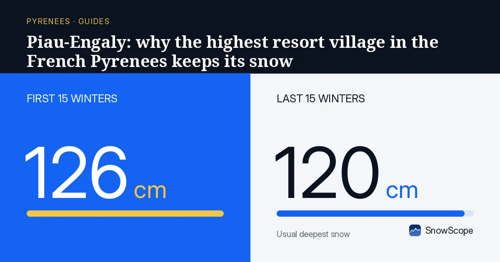

Piau-Engaly: why the highest resort village in the French Pyrenees keeps its snow
Piau-Engaly is small and high: 32 km of mapped runs on 8 lifts, but the base is already at 1762 m and the top at 2527 m, in the Néouvielle massif at the head of the Aure valley. On the French side of the Pyrenees that height is rare, and it shows in the snow. Our history of 46 past winters explains why the resort is often white when lower neighbours are not.
See the live snow forecast for Piau-Engaly in the SnowScope appSnow depth, powder alerts and the 3D map, free.

A late start, then a solid winter
The first snow lies at mid-mountain (2144 m) by November 3 in half of the winters, later than in the Alps, because the Pyrenees get their big snowfalls from Atlantic storms that arrive in earnest in December. November usually leaves 5 cm; December 30 cm at mid-mountain and 39 cm at the top. A rich December reaches 71 cm, a poor one 4 cm.
January to March: the Atlantic months
January brings 63 cm at mid-mountain, February 90 cm and March 83 cm; at the top the usual depth is 119 cm in February and 111 cm in March, the deepest month up there. The usual winter peak is 88 cm at the base, 123 cm at mid-mountain and 159 cm at the top.
The most reliable week at mid-mountain is ISO week 7, in mid-February, with a usual 86 cm and 83 per cent of past winters above 50 cm. Half of the winters keep 50 cm or more at mid-mountain for 14 weeks.
Why the base matters here
Because the village is at the base, the base number is the one you walk out into. A usual peak of 88 cm there, between 34 cm in the leanest past winter and 159 cm in the richest, means ski-in, ski-out most of the season. Lower Pyrenean villages cannot say the same.
Variability: the Pyrenean caveat
The Pyrenees swing more from winter to winter than the Alps. At mid-mountain the usual peak is 123 cm but the poorest past winter stopped at 44 cm and the richest reached 206 cm. Last winter peaked at 145 cm. Booking late February or March, when the usual depth is highest, is the simplest way to shorten the odds.
The long view
Over 46 winters the usual peak at the top barely moved, from 157 cm in the first 15 winters to 158 cm in the last 15. Days with snow on the ground at mid-mountain went from 180 to 160. The height is doing its job.
Tips for skiers
- Book February or March; the Pyrenean winter arrives late and peaks late.
- The whole resort is above the usual snow line, so a thin year hurts less here than in the valley resorts.
- Our depths are an estimate for the area from past winters, not resort measurements; openings are on the official site.
- The road from Saint-Lary climbs to the resort: winter tyres or chains are part of the trip.
References and credits
- Wikipedia, 'Piau-Engaly', retrieved 22 November 2026: highest resort village of the French Pyrenees, Néouvielle massif, Aure valley. fr.wikipedia.org/wiki/Piau-Engaly
About these numbers
Snow numbers: SnowScope snow history, 46 past winters (1980-81 to 2025-26) at three heights of the resort, a model of the past corrected for height (an estimate for an area, not resort reports). Lift, run and access facts: the sources listed below, checked on the date shown.
Official avalanche bulletins: Météo-France – Bulletin d'estimation du risque d'avalanche
Cite this report
For research, teaching or the press: the numbers and charts are free to reuse under CC BY 4.0 with this citation.
SnowScope (2026), Piau-Engaly: why the highest resort village in the French Pyrenees keeps its snow, https://snowscope.app/blog/en/2026/11/piau-engaly-why-the-highest-pyrenees-resort-keeps-its-snow.html, accessed 2026-11-22
SnowScope (Atlas Labs). (2026, November 22). Piau-Engaly: why the highest resort village in the French Pyrenees keeps its snow. SnowScope snow reports. https://snowscope.app/blog/en/2026/11/piau-engaly-why-the-highest-pyrenees-resort-keeps-its-snow.html
BibTeX
@misc{snowscope2026piauengalywhythehighestp,
author = {{SnowScope (Atlas Labs)}},
title = {Piau-Engaly: why the highest resort village in the French Pyrenees keeps its snow},
year = {2026},
month = nov,
howpublished = {\url{https://snowscope.app/blog/en/2026/11/piau-engaly-why-the-highest-pyrenees-resort-keeps-its-snow.html}},
note = {Published 2026-11-22 10:49 UTC; accessed 2026-11-22}
}· CC BY 4.0 · Methods, data and tools →
Piau-Engaly: snow and temperature by height, this winter vs last (tools) →
Follow Piau-Engaly
Free: a message when fresh snow is coming, and the forecast every morning.
More snow reports

Compare Grandvalira and Spanish resorts in December 2026 for snow depths, lift heights, and prices starting from 49.00 EUR.

Rain forecast as freezing level climbs to 4080 m; snow measured on 15 November is thin (under 20 cm) at all major Pyrenees resorts.

Fewer snow days at all 120 points we studied in the Pyrenees since 1980-81, most below 1,500 m: our 46-winter record and the research behind it.